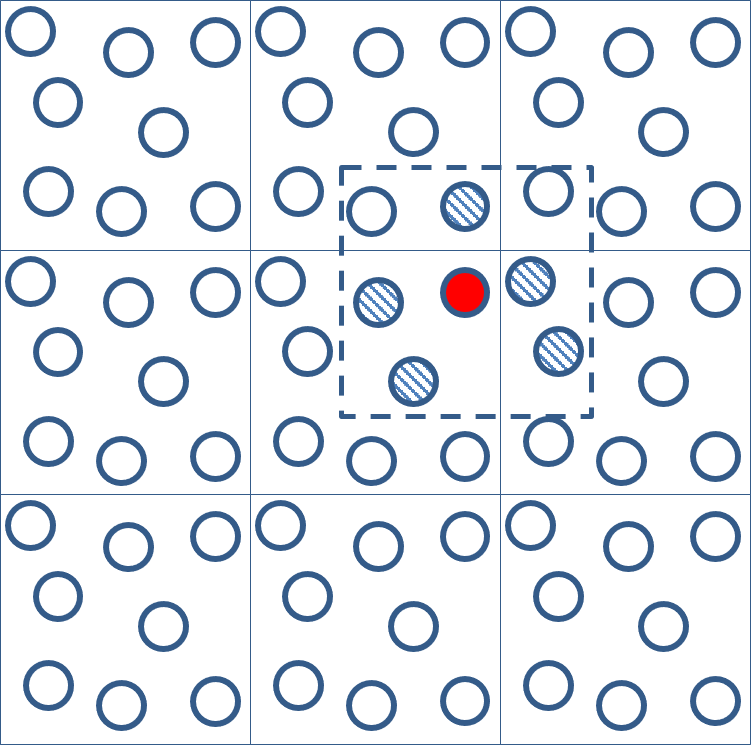
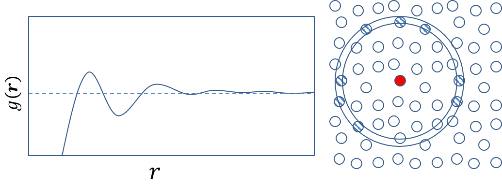

Dealing with larges systems and dynamics - Interatomic potentials and molecular dynamics
Contents
Dealing with larges systems and dynamics - Interatomic potentials and molecular dynamics#
Interatomic potentials#
Interatomic potentials, also known as force fields or molecular mechanics potentials, are mathematical models used to describe the interactions between atoms in a material. They are an important tool in computational materials science, providing a means to simulate the behavior of materials on the atomic scale.
Interatomic potentials are typically developed based on empirical or semi-empirical methods, using experimental data or quantum mechanical calculations as a basis. The most common types of interatomic potentials include:
Pair potentials: These potentials describe the interactions between pairs of atoms and are typically expressed as a function of the distance between the atoms. Examples of pair potentials include the Lennard-Jones potential, the Morse potential, and the Buckingham potential.
Embedded atom method (EAM) potentials: These potentials account for the interactions between an atom and its neighboring atoms, as well as the interactions between the atoms and the underlying lattice. EAM potentials are often used for metallic materials and are based on the assumption that the energy of an atom is a function of the electron density around it.
Interatomic potentials are typically parameterized using experimental data or high-level quantum mechanical calculations. The parameters in the potential function are adjusted until the predicted properties of the material match the experimental data or quantum mechanical calculations. Once the potential has been parameterized, it can be used to simulate the behavior of the material under different conditions, such as temperature, pressure, and deformation.
Interatomic potentials are widely used in computational materials science for a variety of applications, including the prediction of the mechanical, thermal, and electrical properties of materials, the study of defect behavior and diffusion in materials, and the design of new materials with tailored properties. However, it is important to note that interatomic potentials are not always accurate and may have limitations, particularly in cases where the material being studied has complex bonding interactions or exhibits strong quantum mechanical effects. As such, it is important to validate the accuracy of any interatomic potential before using it for simulations.
The Wikipedia-page provide a rather good an comprehensive summary as well, follow this link if you are interested.
Energy of a pair-potential model#
In a pair potential model, the total energy of a system is calculated as the sum of the pairwise interaction energies between all pairs of atoms in the system. The pairwise interaction energy between two atoms i and j is given by the potential energy function \(V(r_{ij})\), where \(r_{ij}\) is the distance between the two atoms.
The total potential energy of the system, U, is then given by:
where the sum is taken over all unique pairs of atoms in the system.
At finite temoeratures, in addition to the potential energy, the total energy of the system also includes contributions from the kinetic energy of the atoms. Note that static DFT or HF calculations typically neglects these contributions to the energy. The kinetic energy of an atom i with mass \(m_i\) and velocity \(v_i\) is given by:
The total kinetic energy of the system, \(T\), is then given by the sum of the kinetic energies of all atoms in the system:
where \(N\) is the total number of atoms in the system.
The total energy of the system, \(E\), is then given by the sum of the potential and kinetic energies:
In order to calculate the potential energy of each pair of atoms in the system, it is necessary to have a functional form for the pairwise potential energy function \(V(r_{ij})\).
Interactions under periodic boundary conditions#
In a simulation using periodic boundary conditions, the interactions between atoms in adjacent unit cells are taken into account to represent an infinite system.
To understand how this is done, consider a simulation cell containing a number of atoms, and imagine replicating this cell periodically in all three dimensions. This creates a three-dimensional lattice of identical cells, with each cell containing the same set of atoms as the original simulation cell. The replicated cells are called periodic images, and are arranged around the original simulation cell in a periodic manner, such that the distance between adjacent cells is equal to the length of the simulation cell in each dimension.
When calculating the potential energy and forces acting on the atoms in the simulation cell, it is necessary to account for the interactions between atoms in adjacent cells. This can be done by including all pairwise interactions between atoms in the simulation cell and their periodic images.
If we have a pair of atoms in the simulation cell, and their periodic images are located in the adjacent cells, then the potential energy between these two atoms is calculated as the sum of the potential energy contributions from all pairwise interactions between the atoms in the simulation cell and their periodic images. This includes interactions between atoms in the simulation cell, between atoms in the simulation cell and their periodic images, and between periodic images of atoms in adjacent cells.
To avoid double-counting of interactions, a cutoff distance is typically used to limit the range of pairwise interactions that are included in the calculation. This means that interactions between atoms that are separated by a distance greater than the cutoff distance are neglected, and only interactions between atoms within the cutoff distance and their periodic images are taken into account.
 Figure. When using a pair potential under periodic boundary conditions atoms interact with replicas of the repeated simulation cell. To deal with the infinite number of nieghbors in the full repeating array of cell a cut-off of the potential is applied. This leads to a finite number of neigbors affecting any atom. This is illustrated for the highlighted atom in cell.
Molecular dynamics#
Molecular dynamics (MD) is a powerful computational technique used in materials science, chemistry, physics, and biology to simulate the behavior of complex systems at the atomic or molecular level. It involves the numerical integration of Newton’s equations of motion to track the positions and velocities of individual atoms or molecules in a system over time, allowing researchers to study the behavior of the system under different conditions.
The basic principles of molecular dynamics involve defining an initial configuration of the system, specifying the interactions between the atoms or molecules in the system (usually through the use of an interatomic potential), and then numerically integrating the equations of motion to evolve the system over time. The equations of motion are typically solved using numerical algorithms such as Verlet or leapfrog integration.
MD simulations can be used to study a wide range of phenomena, including the behavior of materials under extreme conditions, such as high temperature or pressure, the formation and properties of chemical reactions, and the dynamics of biological molecules such as proteins and nucleic acids. By varying the parameters of the simulation, such as temperature, pressure, or composition, researchers can gain insights into the fundamental physical and chemical properties of the system.
One of the key advantages of MD simulations is that they allow researchers to study phenomena that are difficult or impossible to study experimentally. For example, MD simulations can be used to study the behavior of materials at extreme temperatures or pressures, or to study the formation and behavior of short-lived intermediates in chemical reactions. MD simulations can also provide detailed information about the behavior of individual atoms or molecules in a system, allowing researchers to gain insights into the fundamental physics and chemistry of the system.
However, MD simulations also have limitations. In particular, the accuracy of the simulation depends on the quality of the interatomic potential used to describe the interactions between atoms or molecules in the system. Or restrictions to small systems and short time scales in the case of so-called Ab-Inito MD where energies and forces are computed at the DFT or HF level of theory. While many interatomic potentials have been developed and validated against experimental data, there are still many materials and systems for which accurate potentials have not yet been developed. Additionally, MD simulations can be computationally expensive, particularly for large systems or long simulation times, which limits the scope and duration of simulations that can be performed.
Despite these limitations, MD simulations have become an important tool in materials science, chemistry, physics, and biology, providing insights into the behavior of complex systems and informing the design of new materials and compounds with tailored properties.
The MD workflow#
A typical MD workflow based on a pair-potential involves several steps:
Initialization: The first step is to set up the initial configuration of the system, which typically involves randomly placing atoms or molecules in a simulation box. The size and shape of the box is chosen to accommodate the desired system size and any boundary conditions that are needed for the simulation.
Pair-potential definition: The pairwise interatomic potential is defined, typically through the selection of a functional form (such as Lennard-Jones or Morse potential) and the specification of parameters for the potential (such as the well depth and interaction range).
Equilibration: Before the actual production run of the simulation, the system is equilibrated to the desired temperature and pressure. This typically involves running the simulation for a short period of time with fixed boundary conditions and a thermostat and barostat to control the temperature and pressure of the system.
Production run: Once the system has been equilibrated, the production run can begin. The equations of motion are numerically integrated to evolve the system over time, with the positions and velocities of the atoms or molecules being updated at each time step. During the production run, properties of interest such as the temperature, pressure, and potential and kinetic energies of the system are monitored and recorded.
Analysis: After the production run has completed, the results are analyzed to extract information about the behavior of the system. This typically involves calculating various properties such as the radial distribution function, diffusion coefficient, or melting temperature of the system, which can then be compared to experimental data or used to gain insights into the underlying physics and chemistry of the system.
Key equations#
The key equations in molecular dynamics (MD) simulations are the equations of motion, which describe the time evolution of the positions and velocities of the particles in the system. The most commonly used equations of motion are the Newtonian equations:
where \(\mathbf{r}_i\) is the position of particle \(i\), \(\mathbf{F}_i\) is the net force acting on particle \(i\), \(m_i\) is the mass of particle \(i\), and \(t\) is time.
To solve these equations of motion numerically, a finite time step \(\Delta t\) is chosen and the positions and velocities of the particles are updated at each time step using a numerical integration method such as the Verlet algorithm or the leapfrog method. The choice of time step is important, as a time step that is too large can lead to numerical instabilities or inaccuracies in the simulation.
To maintain the desired temperature of the system in an MD simulation, a thermostat is used to control the amount of energy exchanged between the system and the environment. The most commonly used thermostat is the Nosé-Hoover thermostat, which adds an extra term to the equations of motion:
where \(\zeta\) is a thermostat variable and \(\mathbf{v}_i\) is the velocity of particle \(i\). The value of \(\zeta\) is updated at each time step using an additional set of equations, which depend on the desired temperature of the system and the temperature of the thermostat.
In summary, the key equations in MD simulations are the equations of motion, which are solved numerically using a finite time step and a numerical integration method. To maintain the desired temperature of the system, a thermostat is used to control the energy exchange between the system and the environment.
Analysis - properties#
RDF#
The radial distribution function (RDF) is a measure of the probability of finding a particle at a distance \(r\) from a reference particle in a system. It is a useful tool for characterizing the structure and ordering of particles in a system.
To calculate the RDF from a molecular dynamics (MD) trajectory, one typically follows these steps:
Choose a reference particle in the system. Calculate the distances between the reference particle and all other particles in the system at each time step of the MD trajectory. Bin the distances into radial bins of width \(\Delta r\). Count the number of particles within each bin at each time step. Average the particle counts over all time steps to obtain the radial distribution function \(g(r)\). Mathematically, the RDF can be expressed as:
where \(\rho\) is the number density of particles, \(N\) is the total number of particles, and \(\delta\) is the Dirac delta function. The RDF measures the probability of finding a particle at a distance \(r\) from a reference particle, normalized by the expected number of particles in a shell of thickness \(\Delta r\) and radius \(r\) in a uniform system.
The RDF is a useful tool for analyzing the structure and ordering of particles in a system. Peaks in the RDF correspond to characteristic distances between particles in different types of ordered structures. The RDF can also be used to estimate the coordination number, which is the average number of nearest neighbors of a particle in the system.
 Figure. The radial distribution measures the local denisity in a spherical shell around a reference particle and compares it to the average denisty of the system. For large \(r\) the shell is a perfect representation of the system as a whole in terms of denisty and the function therefore approaches 1 at large \(r\).
Diffusion#
The diffusion constant is a measure of how fast particles move through a medium. In molecular dynamics (MD) simulations, the diffusion constant can be calculated from the mean squared displacement (MSD) of particles using the Einstein equation.
The mean squared displacement is defined as:
where \(\mathbf{r}(t)\) is the position of a particle at time \(t\) and \(\langle \rangle\) denotes an average over all particles in the system.
The Einstein equation relates the diffusion constant \(D\) to the MSD:
This equation assumes that the motion of the particles is random and isotropic, and that the particles are not subject to any external forces.
To calculate the diffusion constant from an MD trajectory, one typically follows these steps:
Choose a particle or set of particles to track.
Calculate the MSD of the particles as a function of time from the MD trajectory.
Fit the MSD curve to a straight line using linear regression.
Extract the slope of the line, which is equal to \(6D\).
Divide the slope by 6 to obtain the diffusion constant \(D\).
The diffusion constant can be used to characterize the mobility of particles in a system, and can be used to predict the transport properties of materials.
Tutorial#
Assignment: